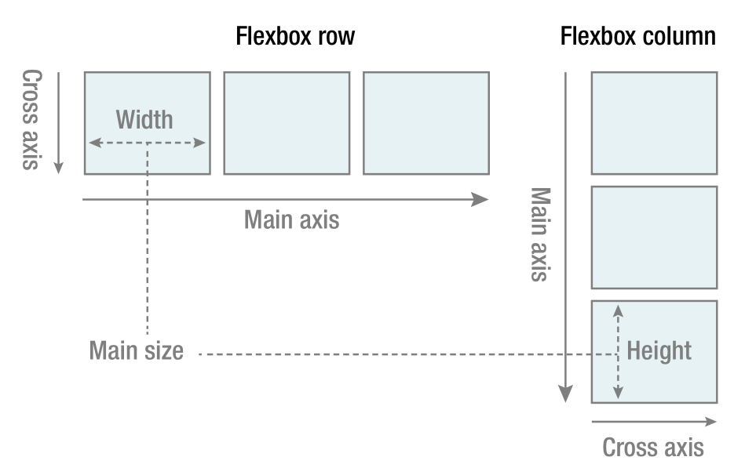

一个灵活可变的网格系统是CSS框架的核心，在CSS3未兴起之前，网格系统一般是靠float来实现的。Float的设计初衷其实只是解决文本绕排的问题而已，因此利用它来实现网格的总不免有些偏门的味道，其中衍生出来的问题也很多，就像说女装只有零次与无数次一样，float貌似也只有零个和无数个，最后就是数不尽的clear之类，的确不大优雅。大概W3C也清楚这样的问题，所以推出了flexbox这样的利器。现今的CSS框架大都也往flexbox靠拢，因此这里也是采用flexbox构造网格，float的方法后续再讲。
光看上图貌似也可以猜测flexbox很适合构造网格，网格说到底就是一块块的区域拼在一起，一行放不满挤到下一行而已。根据这种基本的念想，首先需要一个flex容器，容器里的元素按列从左至右排列，这一行排不下便从下一行接着排，往复不断就好。将外层flex容器叫做row，内部单个元素称为column，然后设定flex-flow: column wrap，一个简单的网格其实就好了。
.row{
display: flex;
flex-wrap: wrap;
padding-left: $layout-spacing;
padding-right: $layout-spacing;
}
.column{
flex: 1;
max-width: 100%;代码中出现的有关margin与padding的部分大都不重要可以不去看，之后的所有代码都是这样，所以直接看column部分就好，注意此时column并没有指定宽度，那它便默认flex: 0 1 auto，也就是说除非内部元素的宽度已经缩到最小一行还塞不下才会另起一行，如下所示：
苟利国家生死以
苟利国家生死以
苟利国家生死以
苟利国家生死以
苟利国家生死以
苟利国家生死以
苟利国家生死以
苟利国家生死以
苟利国家生死以
苟利国家生死以
苟利国家生死以
苟利国家生死以
苟利国家生死以
苟利国家生死以
苟利国家生死以
苟利国家生死以
岂因祸福避趋之
这样显然不利于自由规划想要的尺寸，所以一般来说还需要对列的宽度进行自定义，这里的自定义其实就是给出一系列固定宽度的列供选择，也就导致需要有一个最小的列宽作为基准列宽，一般而言会将一行分为10列或者12列以得到最小列宽，个人认为12列比较好，因为他是2、3、4、6的倍数，也就意味着可以将一行非常均匀地划分为6、4、3、2列，而如果取10列，就只能均匀分为2列或者5列了，实用性较低。
@for $i from 1 through 12{
&.col-#{$i}{
flex: none;
width: percentage($number: $i/12);
}
}注意到.col-*的属性flex为none，这样设置了flex-grow等于0，导致列并不会因为行内有多余空间而增加宽度。这里特别说明一下flex-shrink等于0的意图，可能第一眼看过去会以为这个设置为0是防止几列强行缩短自身塞到一行内，实际上这个属性是没用的，因为row已经设置了flex-wrap: wrap，这种情况下flex-shrink就没有什么效果了。
七列
六列
column的flex-grow设置为1的情况：
七列
六列
到这里似乎一个好用的网格就做好了，不过仔细想想就知道到这里只是做出了一个网格而已，并没有做出来可以适配各类屏幕尺寸的网格，也就是说，屏幕很大与屏幕很小的布局是一样的，这显然不好。按照正常的美观性而言，大屏幕会分多列布局，小屏幕则多是单列布局，因此需要添加适用于各类不同屏幕尺寸的列宽类。这里很容易想到用媒体查询，只需要先定义好尺寸的断点即好。
// 自适应布局
$size-xs: 480px !default;
$size-sm: 600px !default;
$size-md: 840px !default;
$size-lg: 960px !default;
$size-xl: 1280px !default;
$responsive-size:(
xs:$size-xs,
sm:$size-sm,
md:$size-md,
lg:$size-lg,
xl:$size-xl
);尺寸断点可以根据自己的设想来定，无需拘泥。设定好了断点之后就可以将断点缩略名加入到相应的类中以作标志，如下：
@each $key, $value in $responsive-size{
@media (max-width:$value){
@for $i from 1 through 12{
&.col-#{$key}-#{$i}{
flex: none;
width: percentage($number: $i/12);
}
}
.show-#{$value}{
display: block !important;
}
.hide-#{$value}{
display: none !important;
}
}
}注意到除了一般指定列宽的类，还设定了显示列与隐藏列的类，这样特定功能的类还有一些，作为辅助功能以添加到网格系统中，如下：
.column{
&.col-auto{
flex: none;
width: auto;
}
&.col-mx-auto{
flex: none;
margin-left: auto;
margin-right: auto;
}
&.col-mr-auto{
flex: none;
margin-right: auto;
}
&.col-ml-auto{
flex: none;
margin-left: auto;
}到此为止一个自适应布局的网格系统也就完成了，一些细节性的东西酌情添加便好。注意到字母x代表左右方向，y代表上下方向，这点在后续的程序中也基本是通用的。